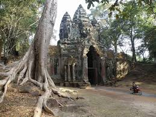
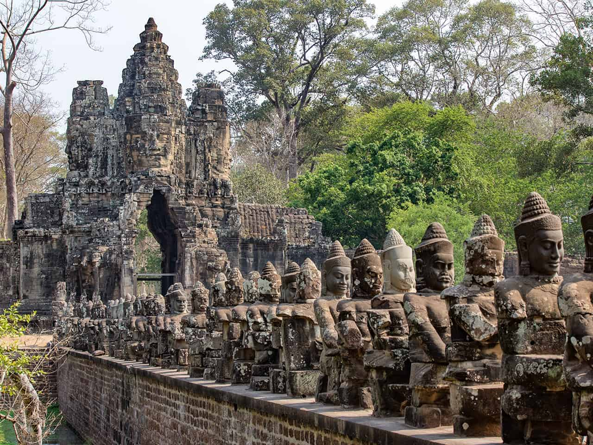
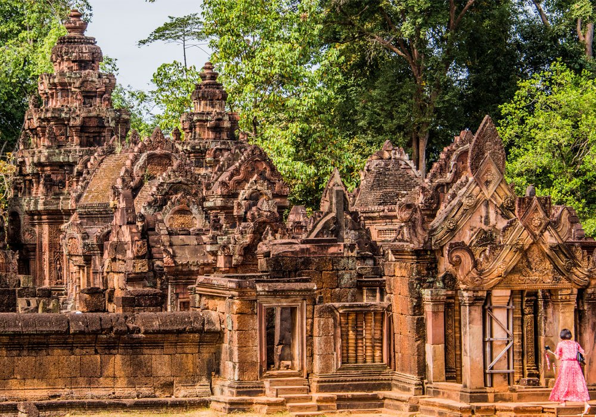

Angkor Wat

Angkor Wat is a temple complex in Cambodia and the largest religious monument in the world.
Angkor Thom

The south gate of Angkor Thom is most popular with visitors, as it has been fully restored
and many of the heads (mostly copies) remain in place. The gate is on the main road into
Angkor Thom from Angkor Wat.
Banteay Srei

Banteay Srei or Banteay Srey (Khmer: បន្ទាយស្រី) is a 10th-century Cambodian temple
dedicated to the Hindu god Shiva. Located in the area of Angkor, it lies near the hill
of Phnom Dei, 25 km (16 mi) north-east.
Angkor Wat is a temple complex in Cambodia and the largest religious monument in the world,
on a site measuring 162.6 hectares (1,626,000 m2; 402 acres). It was originally constructed
as a Hindu temple dedicated to the god Vishnu for the Khmer Empire, gradually transforming
into a Buddhist temple towards the end of the 12th century. It was built by the Khmer King
Suryavarman II in the early 12th century in Yaśodharapura, the capital of the Khmer Empire,
as his state temple and eventual mausoleum. Breaking from the Shaiva tradition of previous
kings, Angkor Wat was instead dedicated to Vishnu. As the best-preserved temple at the site,
it is the only one to have remained a significant religious centre since its foundation.
The temple is at the top of the high classical style of Khmer architecture. It has become
a symbol of Cambodia, appearing on its national flag, and it is the country's prime
attraction for visitors.
Angkor Wat combines two basic plans of Khmer temple architecture: the temple-mountain and
the later galleried temple. It is designed to represent Mount Meru, home of the devas in
Hindu mythology: within a moat and an outer wall 3.6 kilometres (2.2 mi) long are three
rectangular galleries, each raised above the next. At the centre of the temple stands a
quincunx of towers. Unlike most Angkorian temples, Angkor Wat is oriented to the west;
scholars are divided as to the significance of this. The temple is admired for the grandeur
and harmony of the architecture, its extensive bas-reliefs, and for the numerous devatas
adorning its walls.
Angkor Thom Temple
The city of Angkor Thom consists of a square, each side of which is about three kilometers
(1.9 miles) long. A laterite wall 8 meters (26 feet) in height around the city encloses an
area of 145.8 hectares (360 acres). A moat with a width of 100 meters (328 feet) surrounds
the outer wall. An entry tower and a long causeway bisect each side of the wall except on the
east where there are two entrances. The additional one, called the "Gate of Victory" is aligned
with the causeway leading to the Terraces of the Elephants and the Leper King. A small temple
known as "Prasat Chrung" stands at each corner of the wall around the city of Angkor Thom.
The south gate of Angkor Thom is most popular with visitors, as it has been fully restored
and many of the heads (mostly copies) remain in place. The gate is on the main road into
Angkor Thom from Angkor Wat, and it gets very busy at peak times.

Banteay Srei Temple
Banteay Srei or Banteay Srey (Khmer: ប្រាសាទបន្ទាយស្រី) is a 10th-century Cambodian temple
dedicated to the Hindu god Shiva. Located in the area of Angkor, it lies near the hill of
Phnom Dei, 25 km (16 mi) north-east of the main group of temples that once belonged to the
medieval capitals of Yasodharapura and Angkor Thom. Banteay Srei is built largely of red
sandstone, a medium that lends itself to the elaborate decorative wall carvings which are
still observable today. The buildings themselves are miniature in scale, unusually so when
measured by the standards of Angkorian construction. These factors have made the temple
extremely popular with tourists, and have led to its being widely praised as a "precious gem",
or the "jewel of Khmer art."
Consecrated on 22 April 967 A.D., Banteay Srei was the only major temple at Angkor not
built by a monarch; its construction is credited to the courtiers named Vishnukumara and
Yajnavaraha, who served as a counsellor to king Rajendravarman II. The foundational stela
says that Yajnavaraha, grandson of king Harsavarman I, was a scholar and philanthropist who
helped those who suffered from illness, injustice, or poverty. His pupil was the future king
Jayavarman V (r. 968–ca. 1001). Originally, the temple was surrounded by a town called
Īśvarapura.
